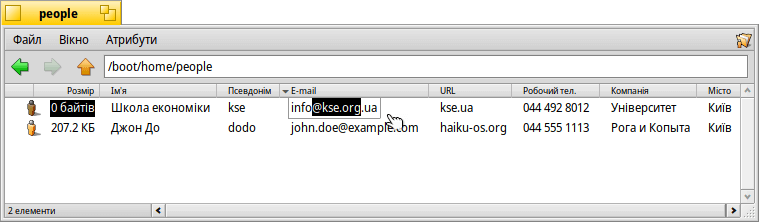

Атрибути (Attributes)
Атрибути – це поля даних, які належать файлу, але не є його частиною. Вони не враховуються при обчисленні розміру файлу, атрибути можна копіювати або змінити, не торкаючись самого файлу. Система використовує атрибути для зберігання, наприклад, розміру файлу, типу файлу або дати останньої модифікації. Це схоже на інші операційні системи та їхні файлові системи.
Різниця полягає в тому, що Ви можете додати будь-який атрибут до будь-якого файлу та відобразити його або зробити доступним для редагування у вікні Tracker. Для цього потрібно: вибрати тип файлу, до якого додоється атрибут; визначити тип атрибута який додається (наприклад, рядок, ціле число або час); дати атрибуту назву та опис.
Сам файл взагалі може бути пустим, не містити ніякої інформації. Подивіться, наприклад, на ці файли контактів:
Як Ви бачите, файл має нульовий розмір разом з атрибутами а атрибут E-mail контакта «Школа економіки» редагується прямо у вікні Tracker.
Якщо Ви проіндексуєте атрибути, як це робиться за замовчуванням для контактів, електронної пошти або аудіофайлів, їх також можна буде шукати за допомогою швидкої системи запитів Haiku.
 Робота з атрибутами у програмі Tracker
Робота з атрибутами у програмі Tracker
Атрибути відображаються подібно до бази даних або електронної таблиці. У програмі Tracker Ви можете вибрати, які атрибути відображати (стовпці) і відповідно їх сортувати список файлів (рядки).
Для цього відкрийте вікно Tracker, клікніть по пункту меню і виберіть атрибути, які Ви хочете відобразити. Або просто зробіть правий клік на заголовку стовпчика (колонки) і позначте пункти в контекстному меню. Ви можете переставляти стовпчики місцями простим перетягуванням заголовка стовпчика. Переміщення стовпчика з вікна – це швидкий спосіб позбутися непотрібних Вам колонок.
Подвійний клік миші на лінії між двома атрибутами у заголовку автоматично змінить розмір стовпчика до оптимальної ширини.
Клік на заголовку стовпчика змінить порядок сортування з висхідного на низхідний. Ви можете встановити вторинний порядок сортування, утримуючи клавішу SHIFT під час натискання на заголовку стовпчика. Наприклад, можна сортувати файли контактів за компанією, а в межах цього порядку сортувати за іменами контактів. Вторинний порядок сортування позначається світлішим індикатором поруч із заголовком.
Редагування атрибутів є такою ж простою операцією, як і перейменування файлу: клікніть на атрибуті або натисніть ALT E. Щоб переходити між атрибутами використовуйте клавіші TAB і SHIFT TAB. Клавіша ESC дозволить вийти з режиму редагування без збереження змін.
Робота з атрибутами у програмі Terminal (Термінал)
Якщо Ви віддаєте перевагу використанню командного рядка або плануєте працювати з великою кількістю файлів за допомогою сценаріїв, є кілька команд для управління атрибутами з Терміналу.
Більш детальну інформацію про ці команди та їхні опції можна отримати, ввівши назву команди з параметром «-h» або «--help».
listattr
listattr – показує список атрибутів файлу, але за замовчуванням не показує їхній вміст. Для виводу значень атрибутів потрібно додати параметр «-l» або «--long».
usage: listattr [-l|--long] 'filename' ['filename' ...] -l, --long Shows the attribute contents as well.
З нашого прикладу на скриншоті вище:
~/people> listattr -l Джон\ До
File: Джон До
Type Size Name Contents
-------------------------------------------------------------------------------
MIME String 21 "BEOS:TYPE" application/x-person
Text 14 "META:name" Джон До
Text 5 "META:nickname" dodo
Text 25 "META:company" Рога и Копыта
Text 26 "META:address" ул. Заречная 24
Text 9 "META:city" Київ
Text 17 "META:state" Київська
Text 6 "META:zip" 03191
Text 15 "META:country" Україна
Text 21 "META:email" john.doe@example.com
Text 13 "META:hphone" 044 555 1111
Text 17 "META:mphone" +38 044 555 1112
Text 13 "META:wphone" 044 555 1113
Text 13 "META:fax" 044 555 1114
Text 13 "META:url" haiku-os.org
Text 1 "META:group"
229 bytes total in attributes.
~/people>
Окрім усіх атрибутів «META:*», які містять інформацію про контакт, є два системні атрибути:
«BEOS:TYPE» містить тип файлу у вигляді MIME-рядка, у нашому випадку «application/x-person». Він визначає піктограму за замовчуванням і програму, яка відкриває файл, якщо зробити на ньому подвійний клік.
«_trk/pinfo_le» (не відображається) – це атрибут, за допомогою якого Tracker відстежує позицію піктограми файлу.
catattr
catattr – виводить вміст вказаного атрибуту файлу.
usage: catattr [-P] [--raw|-r] <attribute-name> <file1> [<file2>...] -P Don't resolve links --raw,-r Get the raw data of attributes --data,-d Show the attribute data only
Знову з нашого прикладу:
~/people> catattr META:city Джон\ До Джон До : string : Київ
addattr
addattr – додає атрибут до файлу та/або присвоює йому значення.
usage: addattr [-t type|-c code] [ -P ] attr value file1 [file2...]
or: addattr [-f value-from-file] [-t type|-c code] [ -P ] attr
file1 [file2...]
-P : Don't resolve links
The '-t' and '-c' options are alternatives; use one or the other.
type is one of:
string, mime, int, int32, uint32, llong, int64, uint64,
float, double, bool, icon, time, raw
or a numeric value (ie. 0x1234, 42, ...),
or an escape-quoted type code, eg. \'MICN\'
The default is "string"
code is a four-char type ID (eg. MICN)
Припустимо, Джон влаштувався на роботу в компанію Haiku, Inc., тепер Ви можете змінити значення атрибуту «Компанія» на нове:
~/people> addattr -t string META:company Haiku,\ Inc. Джон\ До
rmattr
rmattr – повністю видаляє атрибут з файлу.
usage: rmattr [-P] [-p] attr filename1 [filename2...]
'attr' is the name of an attribute of the file
-P : Don't resolve links
If '-p' is specified, 'attr' is regarded as a pattern.
Хоча з практичної точки зору було б достатньо просто не заповнювати атрибут «Факс», Ви можете повністю видалити його з файлу Джона, ввівши:
~/people> rmattr META:fax Джон\ До
copyattr
copyattr – копіює атрибути з одного або декількох файлів до іншого. За замовчуванням, власне вміст файлу не копіюється.
Usage: copyattr <options> <source> [ ... ] <destination>
Якщо Ви хочете копіювати не тільки атрибути але і вміст файлу, слід додати параметр «-d» або «--data».
Довідку по використанню програми завжди можна отримати, якщо виконати програму з параметром «-h» або «--help».